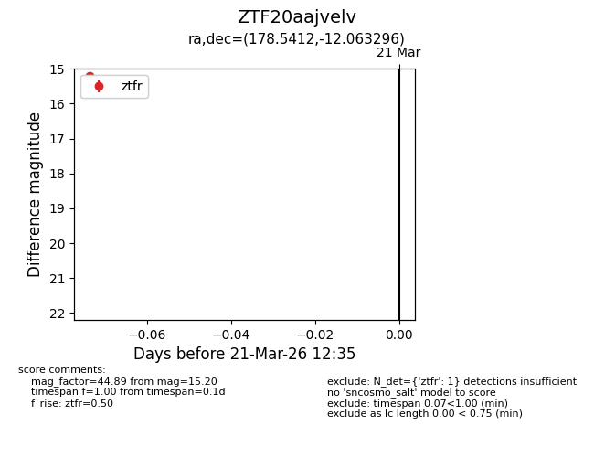
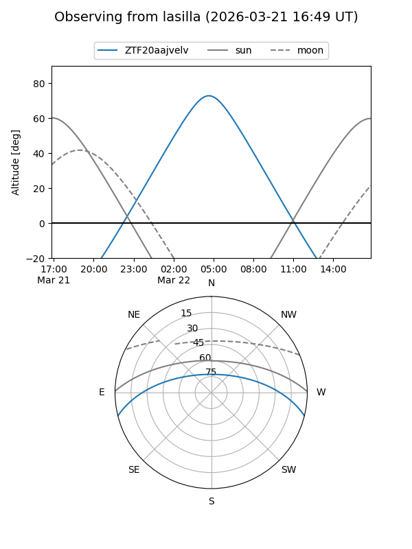
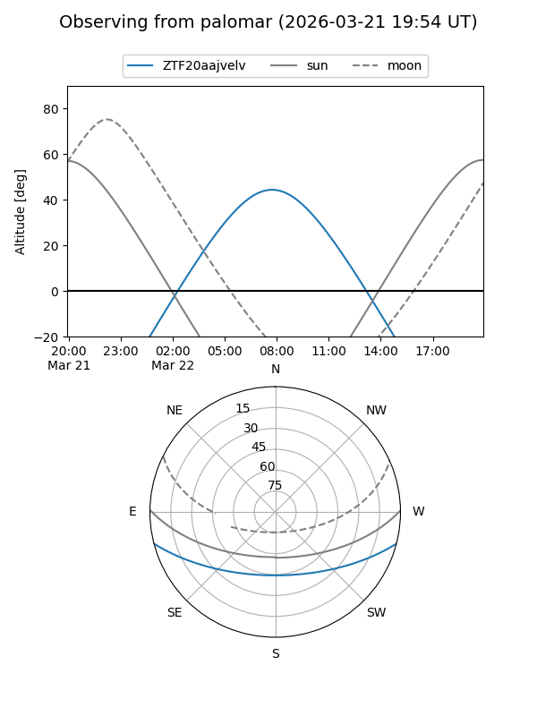

ZTF20aajvelv
Target ZTF20aajvelv at 2026-03-21 12:37
Aliases and brokers:
FINK: link
Lasair: link
ALeRCE: link
alt names
ZTF20aajvelv (ztf,fink_ztf)
Coordinates:
equatorial (ra, dec) = 178.5412,-12.06330
equatorial (HMS+DMS) = 11:54:09.90,-12:03:47.87
galactic (l, b) = (281.5617,+48.41765)
Flags:
Photometry:
last ztfr=15.20
1 ztfr detections
Lightcurve

Visibility


Additional plots